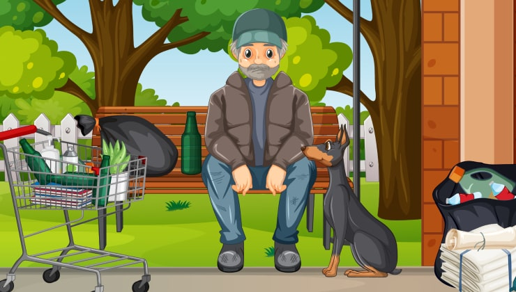

Finanse i ekonomia
| Inwestycje
Niesamowita historia bezdomnego, który potajemnie inwestował w akcje wielkich firm i zarobił ponad 470 mln zł!
Niedawno zmarły Anton Kolasa mieszkał przy tej ulicy przez ponad 40 lat. Po jego śmierci w zeszłym miesiącu nagle okazało się, że staruszek był odnoszącym sukcesy inwestorem. Zarobione na puszkach pieniądze wydawał na bardzo mądre inwestycje w akcje największych światowych firm i osiągał NIESAMOWITE ZYSKI!
Niesamowita historia sukcesu BEZDOMNEDO MILIONERA z ławki w parku
Dla świata zewnętrznego Anton Kolasa był biednym zbieraczem puszek. Staruszek spędził około 40 lat przemierzając ulice swojego rodzinnego miasta, niemal codziennie jeżdżąc na rowerze w swojej niebieskiej kurtce i poszarpanych spodniach, gromadząc puszki i butelki dla pieniędzy.
Był w oczach zdecydowanej większości ludzi zwykłym ulicznym menelem.
Zamiast tego, gdy Anton Kolasa zmarł w wieku 66 lat kilka miesięcy temu, pozostawił po sobie ponad 659 mln zł. Na swoim osobistym zagranicznym koncie bankowym pozostawił akcje o wartości prawie 1 mln zł, a za resztę kupił ponad 100 sztabek złota, które ukrył w domu.
Jak to zrobił? Oszczędności i mądre inwestowanie uczyniły go bogatym.
Oprócz jedzenia resztek ze śmietników i noszenia tych samych brudnych ubrań, pan Kolasa regularnie, codziennie studiował strony finansowe gazet w miejskiej bibliotece publicznej. Codziennie chodził do biblioteki, aby nie kupować gazet.
Znał giełdę na wylot - jego kuzyn pozostawił nam ten komentarz. To właśnie dzięki swoim sprytnym decyzjom zgromadził ten majątek.
Milioner został opisany przez krewnych jako 'bardzo mądre' dziecko, które porzuciło szkołę po kryzysie osobistym. Jego fortuna wyszła na jaw po awanturze, która wybuchła po jego śmierci, ponieważ pan Kolasa zaniósł swoje sekretne bogactwo do grobu.
Wiedziano jedynie, że umiejętnie inwestował w akcje najlepszych światowych firm.
Szokująca Prawda: Jak Zarobić Swój własny dodatkowy Pasywny Przychód Na Inwestycjach W 3 Prostych Krokach, W Stylu Bezdomnego Antona Kolasa
Nasza redakcja zainteresowała się tą historią. Postanowiliśmy zagłębić się w nią bardziej niż robiły to do tej pory inne media. Skoro bezdomny był w stanie nauczyć się zarabiać na akcjach, to każdy z naszych czytelników ma prawo mieć taką samą szansę.

Anton Kolasa sporządził testament, w którym pozostawił całą swoją fortunę jednemu z kuzynów, który odwiedzał go w miesiącach poprzedzających jego śmierć. Jednak inny kuzyn, który uważał, że jego ojciec ma prawo do części fortuny, zakwestionował testament, gdy wyszedł na jaw pełny zakres majątku.
Tak więc, niesamowita historia życia "milionera z kosza na śmieci" miała swój zawadiacki finał w procesie sądowym między jego krewnymi o własność niespodziewanej fortuny. W tej chwili próbują oni rozwiązać konflikt.
Poprosiliśmy również krewnych bohatera tej historii o podzielenie się szczegółami dla dobra naszych czytelników. Odmówili bezpośredniego komentarza, ale przekazali niektóre dokumenty zmarłego. Wyciąg z konta Antona Kolasy wskazywał na główne źródło dochodu: Platform.
Stock Investment Income
+$214.66
Digital Investments ("Platform")
+$284,367.25
Customer expenses (categories are not specified)
-$13,45
Ending Balance on
$1,332,195.82
Okazało się to prostsze, niż wydawało się na pierwszy rzut oka. Anton Kolasa od lat inwestował w akcje na własną rękę, z niewielkim powodzeniem. Ostatnio jednak stał się bardzo bogaty. Okazało się, że wszystkie jego skromne oszczędności zostały zainwestowane w system, który generuje regularny, automatyczny dochód pasywny. Najlepsza część: prawie nikt o tym nie wie. Nie widzieliśmy żadnej reklamy tego projektu, który jest w stanie przyciągnąć miliony użytkowników.
Kontakty zespołu projektowego były jednak w domenie publicznej. Prawda o tajemniczym "tajnym" produkcie stała się jasna.
Skontaktowaliśmy się więc z jednym z założycieli, który podzielił się większą ilością informacji o projekcie.
Patryk Kasowski, Główny Inżynier Rozwoju Platformy
Platform to finansowy system automatycznego handlu zasilany sztuczną inteligencją. Stworzyliśmy samouczący się rdzeń logiczny, aby dokładnie określić najbardziej zyskowne transakcje na rynku giełdowym i przewidzieć trendy wzrostowe.
Naszym głównym celem było stworzenie innowacyjnego narzędzia handlowego, które nie istniało wcześniej, aby nawet dziecko lub bardzo stary człowiek mogli zarabiać na akcjach.
Nasz produkt nie był szeroko anonsowany, ponieważ mamy techniczne ograniczenie liczby użytkowników. Nie ma potrzeby przeciążania systemu. Obecnie korzysta z niego zaledwie kilkuset inwestorów. Witamy wszystkich nowych użytkowników, ale należy się pospieszyć.
Teraz nadal rozwijamy system, ale duże banki starają się w każdy możliwy sposób ukryć wszelkie informacje o Platform.
Trudno nam w takiej sytuacji pracować, a tym, co rozgrzewa nasze dusze, są listy z podziękowaniami od naszych użytkowników. Są to zwykli ludzie, którzy już wypróbowali możliwości inwestycyjnych związanych z posiadaniem stabilnego dochodu pasywnego. Na przykład: oto list, który przyszedł do nas wczoraj.

Zenon Mastalski, 40 lat, mechanik samochodowy
Bezdomny Anton Kolasa nie był szalonym geniuszem. Zarabiał na narzędziu finansowym, które każdy może opanować już teraz.
Inną sprawą jest, skąd wiedział o systemie, o którym wie tylko bardzo ograniczona liczba użytkowników? Ta tajemnica zapewne umrze wraz ze starym Antonem. Rozwiązaliśmy jednak inną zagadkę dla naszych czytelników-użytkowników. Podczas tworzenia tego artykułu, w ciągu dwóch tygodni od rozpoczęcia pracy nad opowiadaniem...
Wspaniały Sekret Zarabiania Pieniędzy Na Platform Jest Potwierdzony!
Ważne jest dla nas, aby informacje dla naszych czytelników były sprawdzone i bezpieczne. Postanowiliśmy sprawdzić, czy można pomnożyć inwestycję 5 razy online bez podstawowej edukacji finansowej. Zaprosiliśmy do udziału naszego nowego stażystę w gazecie, Zenobiusza, i daliśmy mu 1200 zł za darmo na początek. Zenobiusz był podekscytowany prawem do zatrzymania wszystkich zysków.
Oto do czego doprowadził eksperyment inwestowania w akcje największych światowych firm. Zenobiusz opowiada historię:
Dlaczego powiedziałem tak? Mam 23 lata i sporo długów. Chcę zarabiać więcej pieniędzy, spłacić długi i wynająć lepsze mieszkanie dla mnie i mojej dziewczyny. Nigdy wcześniej nie inwestowałem. Propozycja redaktora zainteresowała mnie prostotą, że wystarczyło kilka kliknięć, aby zacząć zarabiać. Dodatkowo dostałem pieniądze za eksperyment, a na koniec nic nie straciłem. Dlaczego miałbym nie spróbować?
Jeszcze tego samego dnia zarejestrowałem się na Platform: Wprowadziłem swoje dane kontaktowe do rejestracji i złożyłem minimalny depozyt w wysokości 1200 zł . Kilka minut później oddzwonił do mnie menedżer, aby wyjaśnić szczegóły korzystania z Platform. I to było to! Było to nieco niezwykłe, wyobrażałem sobie inwestowanie jako skomplikowany i niezrozumiały proces dla ekspertów.
Kierownik powiedział mi, że Platform może na początku działać na niekorzyść. Wynika to z konieczności dostosowania automatycznego algorytmu. Rzeczywiście: pierwsze dwie transakcje były nieopłacalne. W sumie straciłem około 100 zł. We frustracji odłożyłem telefon. Jednak wieczorem konto na platformie przekroczyło minimalny depozyt prawie 2 krotnie!

Nie robiłem nic i kontynuowałem monitorowanie konta przez następne kilka dni. Po 2 tygodniach inwestycja pomnożyła się 6-7 krotnie, a zyskowne transakcje były za każdym razem coraz większe!
Po zgłoszeniu się do redaktora naczelnego, pozwolono mi zachować konto Platform tylko dla siebie.
Od razu podarowałem mojej dziewczynie najważniejszy prezent, o którym marzyła.

Teraz przeprowadzamy się do nowego mieszkania, spłacamy długi i planujemy za rok kupić własne lokum. Platform to nasz bilet do nowego życia!
Tak więc, system jest oficjalnie zweryfikowany przez naszą redakcję. EXKLUZYWNY bezpośredni link dla wszystkich naszych czytelników. To nie może być prostsze:
Zarejestruj mnie teraz!Opinia Redaktora Naczelnego:
Historia Antona Kolasy udowodniła, że poprawa stanu majątkowego, nawet w naszych niespokojnych czasach, jest możliwa przez każdą osobę! (Nasz eksperyment również to potwierdził). To bardzo smutne, że pan Kolasa nigdy nie wykorzystał swojego bogactwa, ale historia niesamowitego bezdomnego człowieka otwiera wszystkie drogi dla nas wszystkich, aby poprawić osobisty dobrobyt finansowy i żyć lepiej tu i teraz.
Korzystaj ze wszystkich dobrodziejstw i przyjemności życia a także...
ZACZNIJ ZARABIAĆ PIENIĄDZE JUŻ TERAZ!
REJESTRACJA
Zarejestruj się w systemie
Podaj swoje imię i nazwisko, adres e-mail oraz numer telefonu. Po potwierdzeniu wprowadzonych danych stajesz się pełnoprawnym użytkownikiem systemu.
Wpisz swój adres e-mail, aby uzyskać dostęp VIP do systemu
Wprowadź swój numer telefonu komórkowego, aby zweryfikować swoją tożsamość

DOKONANIE WPŁATY
Wpłać pierwszą wpłatę na swoje konto
Wpłać początkowy depozyt (1200 zł PLN) na swoje konto przed rozpoczęciem korzystania z platfromy. Postępuj zgodnie z instrukcjami na ekranie, aby zakończyć.
Aby aktywować konto i rozpocząć zarabianie, musisz zainwestować kwotę nie mniejszą niż minimalna wpłata

WITAMY NA PLATFORM
Odbierz telefon, aby rozpocząć pracę z Platform
Po rejestracji, poczekaj kilka minut i odbierz telefon od naszego managera. Uzyskasz odpowiedzi na wszystkie swoje pytania i dowiesz się jak w łatwy sposób zarabiać pieniądze.

Zdeponuj 1200 zł lub więcej, aby uzyskać najbardziej dochodową okazję pieniężną w całym życiu!
Daj mi dostęp!UWAGA: Na dzień do rejestracji pozostało miejsc.
Uwagi
Roman Raczkiewicz 7 minut temu
Arnold Pabian 16 minut temu
Sebastian Walewskii 19 minut temu
Tatiana Kubas 25 minut temu
Alicja Tucholska 32 minuty temu
Marcin Galicki 38 minut temu
Dawid <Fakt> Paradowski
23 minuty temu <Fakt>
Lena Kendra 44 minuty temu